체크 한 번에 뿅
- 제목·종류·크기·마감·한 줄 메모만 적으면 끝이에요
- 일·공부, 집안일, 몸·건강, 장보기·심부름, 연락·약속, 나·취미 — 종류마다 몬스터가 달라요
- 동그라미를 누르거나 카드를 오른쪽으로 밀면 뿅!
- 잘못 눌렀으면 '한 일들'에서 체크를 풀면 돼요
적어 둔 할 일은 작은 몬스터가 돼요. 체크 한 번이면 뿅! 토끼 귀 소녀가 뿅망치로 깨부수고, 강아지 요미가 옆에서 같이 기뻐해요.
곧 Google Play에서 만나요지금은 출시 준비 중이에요
화면 둘러보기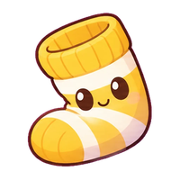
옆으로 밀어서 더 보세요
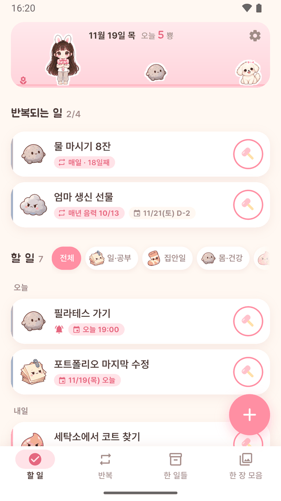
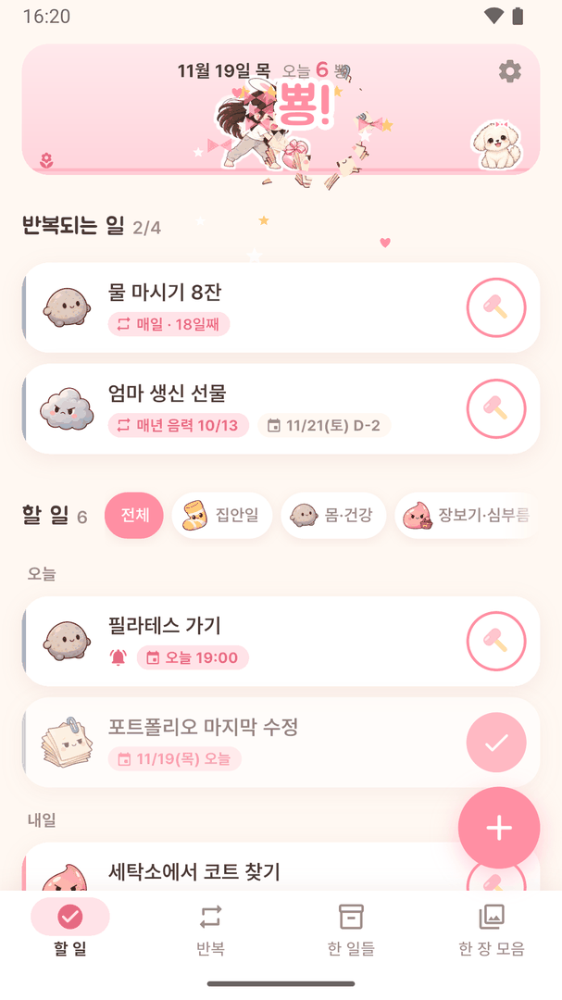
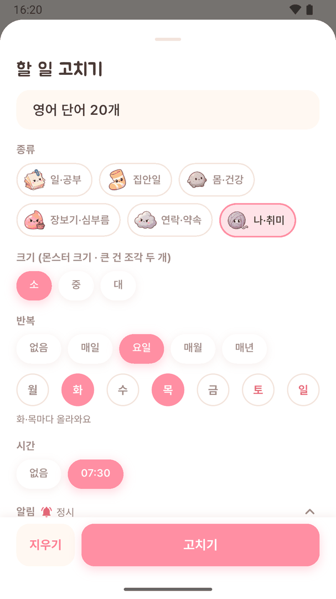
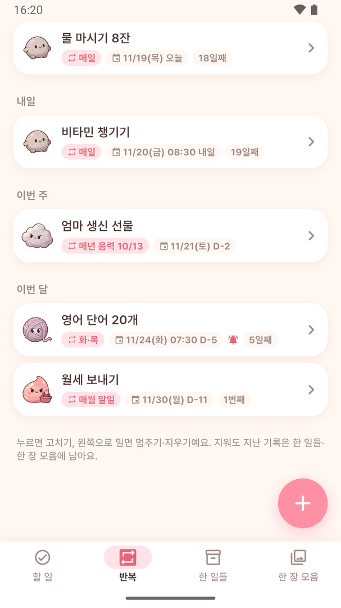
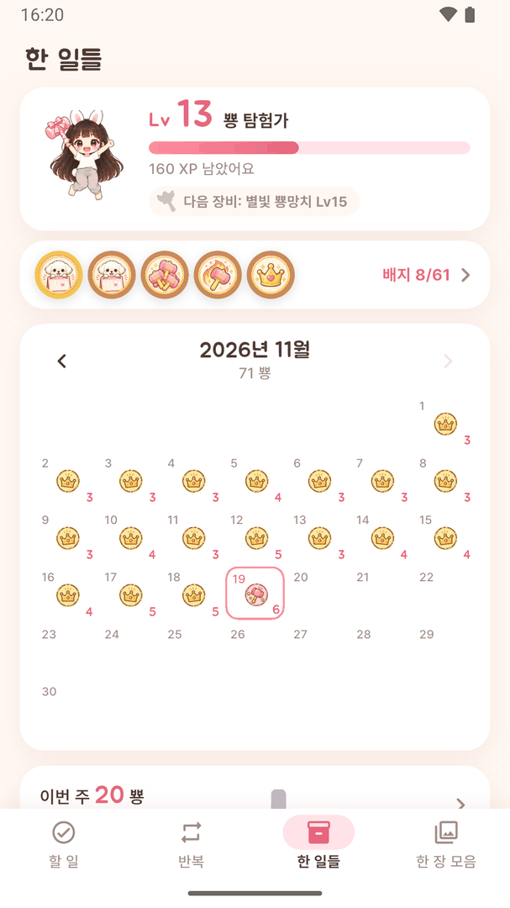
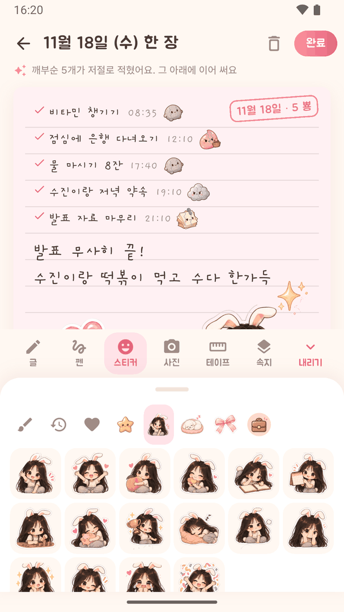
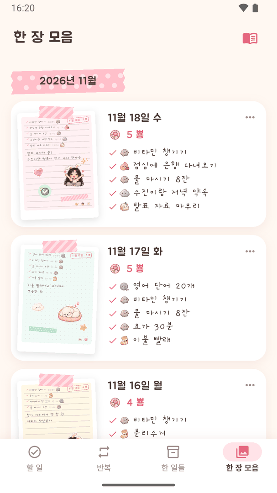
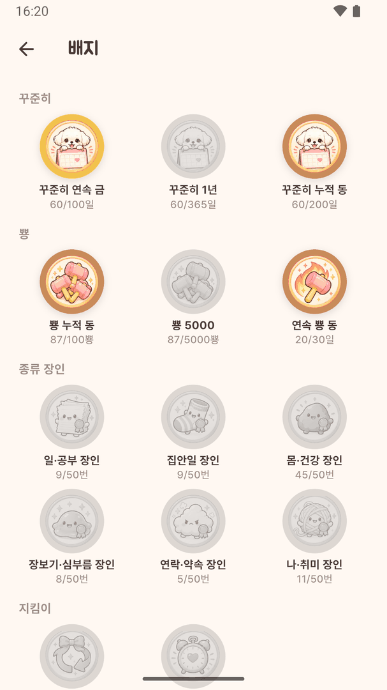
무대와 목록이 나란히 보여요
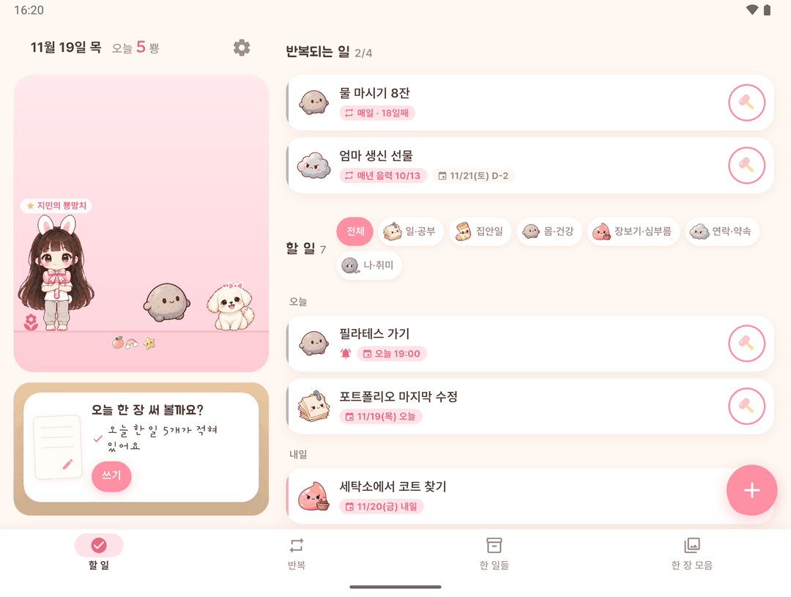
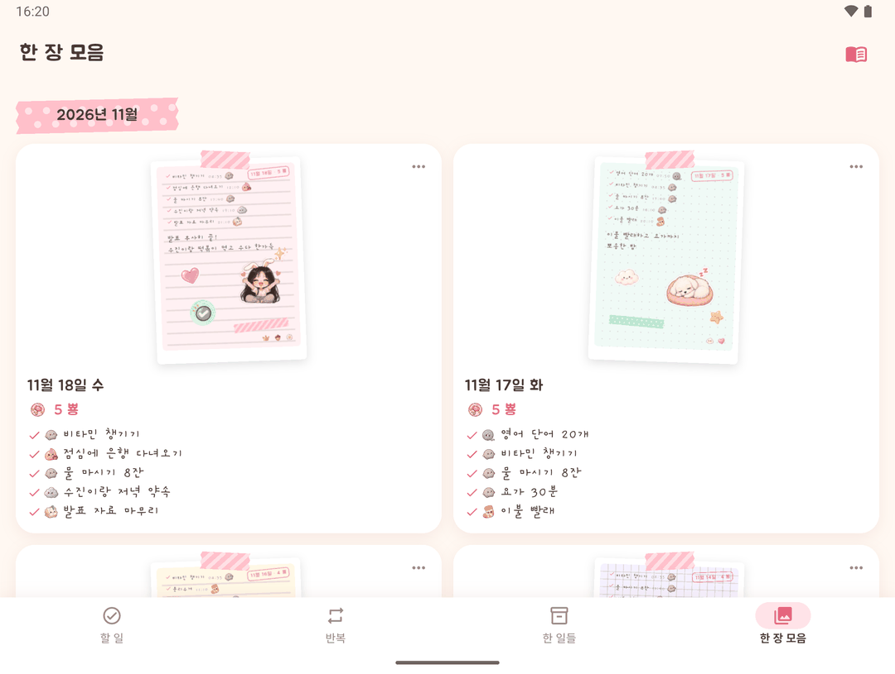
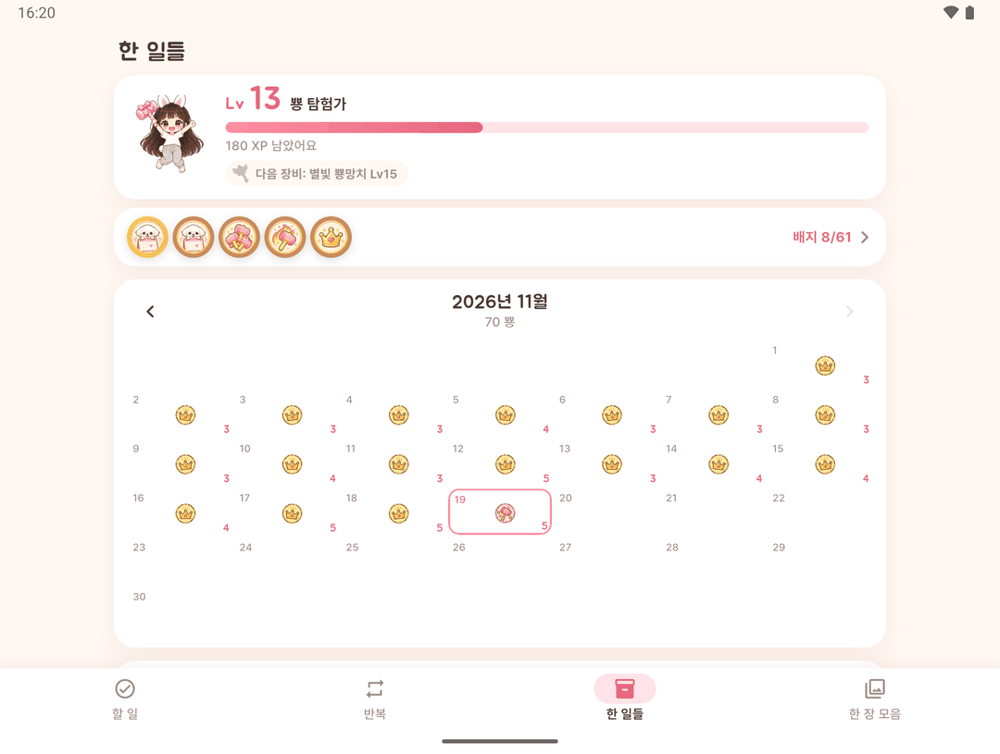
바형 폰은 물론, 접는 폰의 커버 화면·펼친 화면·반쯤 접은 모양에 맞춰 화면이 바뀌어요.
폰을 펴지 않아도 작은 커버 화면에서 할 일을 끝낼 수 있어요.
큰 무대와 할 일 목록이 양쪽에 나란히 보여요.
반쯤 접어 세운 모양에도 화면이 맞춰져요.
뿅은 인터넷에 연결하지 않아요. 할 일과 오늘 한 장은 이 기기 안에만 저장돼요.
같은 폰에 '정 - 캘린더&다이어리&가계부'가 있으면, 할 일을 정 달력 일정으로 보내거나 정의 일정을 뿅 할 일로 가져올 수 있어요.
정이 없어도 뿅의 모든 기능을 그대로 쓸 수 있어요. 정 둘러보기 →